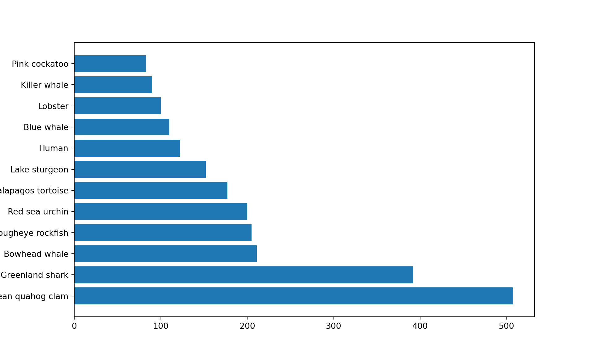
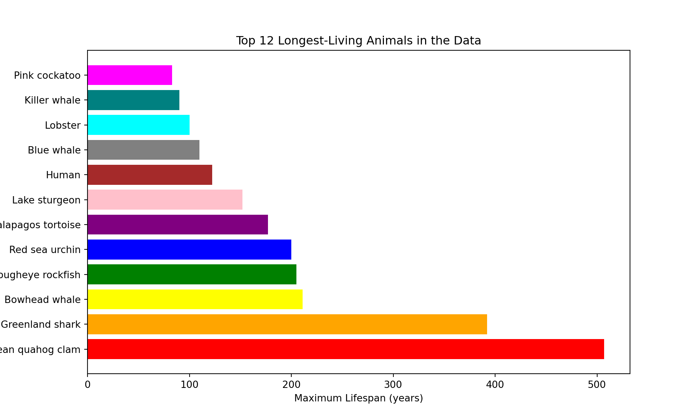
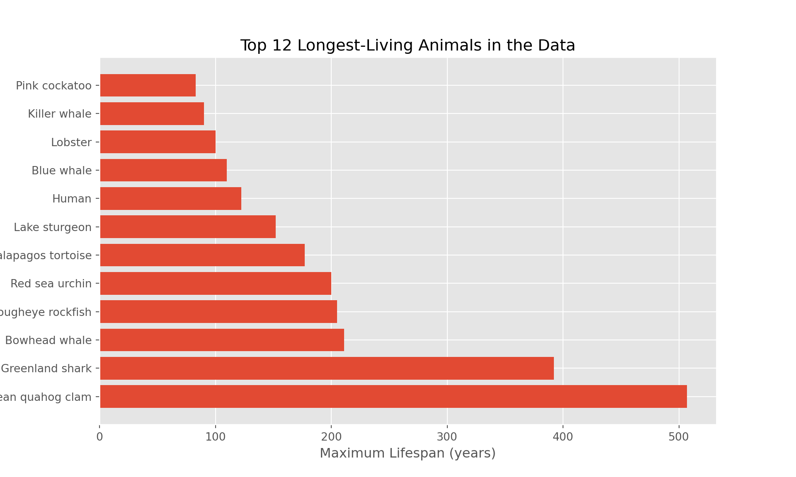

Code
import pandas as pd
import matplotlib.pyplot as pltGraphs help people understand data quickly - much faster than looking at huge tables full of numbers. You’ve probably made a graph in MicroSoft Excel by clicking buttons and changing settings. That’s fine for one or two graphs, but:
Using Python, we can:
Why is Python a more powerful tool than Excel when we want to create lots of graphs?
⚠️ You might not understand everything in the code - and that’s totally normal! Even professional programmers don’t always understand it all straight away. Just have a go, and don’t be afraid to make mistakes.
Some animals live really long lives. The oldest human ever was a French woman named Jeanne Calment - she lived to the age of 122 years and 164 days! That’s pretty impressive… but some animals can live even longer.
What’s their secret? Scientists are trying to find out - and if they do, it could help us understand how to live longer, healthier lives too. Below are some examples of long-lived animals:
In this activity, you’ll use Python to make plots showing how long different animals can live. You’ll get to customise your graphs and compare short- and long-lived species.
What you’ll learn
Some animals live way longer than others - we’ll find out which!
How to use Python to explore real data
How to make custom plots showing animal lifespans
Python does not know how to process and plot data on its own. Python packages contain additional commands that don’t come installed with Python, and allow us to carry out certain extra tasks.
In this activity we’ll use two important ones:
pandas - lets python read and edit data (much like you’d use Excel to process raw data)
matplotlib - helps us draw graphs and plots
To use them, copy and paste the code below into your first code chunk, then press the play button:
import pandas as pd
import matplotlib.pyplot as pltWhat does the pandas package help Python do?
As part of this code, we rename the packages to something shorter. ‘Matplotlib.pyplot’ is quite a lot of letters to type every time! Each time we used it we’d have to type:
matplotlib.pyplot.plot
Instead, we can rename the package as we load it to something simple and easy to remember. In this case ‘plt’. So the above line of code would become:
plt.plot
In summary, this is how we load and rename a package:

Why do we rename packages like matplotlib.pyplot to something shorter like plt?
Next we are going to load our animal ageing data. The data we’re going to be using can be found here. We are going to load it using the package mentioned earlier ‘pandas’. Remember, we have loaded ‘pandas’ and renamed it to ‘pd’.
The code to load the data is below.
data = pd.read_csv("https://raw.githubusercontent.com/CBFLivUni/scholars_event/refs/heads/main/data/animal_ageing_data.csv") We use the read_csv function contained inside the ‘pandas’ package to load the data at the url. We then store it in a variable called ‘data’ using the equals sign.
We can view the data by typing the name of the variable in a code chunk:
dataWhat does this code do?
data = pd.read_csv("some_data.csv")There are lots of rows and columns in our data. In the code below we will extract just the oldest animals from the data, and then we will print out their names and lifespans.
# Find the top 8 longest living animals
oldest_animals = data.sort_values("Maximum longevity (yrs)", ascending=False).head(8)
print("\nThe 8 longest-living animals in this dataset are:")
print(oldest_animals[["Common name", "Maximum longevity (yrs)"]])
The 8 longest-living animals in this dataset are: Common name Maximum longevity (yrs)
0 Ocean quahog clam 507.0
1 Greenland shark 392.0
2 Bowhead whale 211.0
3 Rougheye rockfish 205.0
4 Red sea urchin 200.0
5 Galapagos tortoise 177.0
6 Lake sturgeon 152.0
7 Human 122.5In this code we take our data and sort it in order of longevity. We tell it NOT to do it in ascending order by saying ascending=False. We take the top 8 by including head(8). We then save it in a new variable called ‘oldest animals’.
After that, we print the two colums we are interested in (“Common name” and “Maximum longevity” (yrs)“). Do any of these animals surprise you?
What does .sort_values(..., ascending=False) do in our code?
What does .head(8) do?
What is the 10th longest lived animal?
Which animal only lives for a maximum of 0.27 years?
We are now going to create a simple horizontal bar plot of the 12 most long-lived animals. In the code below:
plt.figure(figsize=(10, 6))
plt.barh(oldest_animals["Common name"], oldest_animals["Maximum longevity (yrs)"])
plt.show()
Why might we want to rotate the bars to be horizontal (barh) instead of vertical?
So far this is quite a simple plot, and it doesn’t have any labels or units for the x- and y- axes - this would be considered a poor graph in reality!
With matplotlib (our Python plotting package) we can keep adding layers of new information to our plot. We are now going to fill in the x- and y- axis. However, we have left the y-axis blank for you to fill in with a suitable name, for example ‘Animal’ or ‘Species’.
plt.figure(figsize=(10, 6))
plt.barh(oldest_animals["Common name"], oldest_animals["Maximum longevity (yrs)"])
plt.xlabel("Maximum Lifespan (years)")
plt.ylabel("______") # ← Label for y-axis
plt.show()Can you remember what plt.show() does?
::
We have now created a simple plot of animal longevity!
Our graph above looks quite good but we might want to customise it more to our liking. We could first change the colours. We do this by passing an additional ‘argument’ to our command plt to let it know the colours we want to use. An example of changing all the colours of our graph is below. (Note: the spelling of ‘colour’ is American in python).
We have also added a title to our graph to explain what we are seeing.
plt.figure(figsize=(10, 6))
plt.barh(oldest_animals["Common name"], oldest_animals["Maximum longevity (yrs)"],
color=["red", "orange", "yellow", "green", "blue", "purple", "pink", "brown", "gray", "cyan", "teal", "magenta"])
plt.xlabel("Maximum Lifespan (years)")
plt.ylabel("Animal")
plt.title("Top 12 Longest-Living Animals in the Data")
plt.show()
You can use any colours you like to customise the graph. You just have to change the name of the colours inside the ‘color’ argument. The ones below all come included with matplotlib.

As well as the colours that come included, matplotlib lets you to pick any colour using a hexcode (a 6 character number/letter code after a hash/#).
We can create hexcodes for colours using some of these links:
The last link will allow you to create a colour palette from an image and give you the hex codes for the palette.

Another way we can modify our graph is by using a different ‘theme’. Themes are different ways of styling the plot, for example background colour, default bar colours, fonts, gridlines, etc. Matplotlib comes with prepared styles that you can use to modify your graph.
We can then see a list of which styles we can use using this code:
plt.style.available['Solarize_Light2', '_classic_test_patch', '_mpl-gallery', '_mpl-gallery-nogrid', 'bmh', 'classic', 'dark_background', 'fast', 'fivethirtyeight', 'ggplot', 'grayscale', 'petroff10', 'seaborn-v0_8', 'seaborn-v0_8-bright', 'seaborn-v0_8-colorblind', 'seaborn-v0_8-dark', 'seaborn-v0_8-dark-palette', 'seaborn-v0_8-darkgrid', 'seaborn-v0_8-deep', 'seaborn-v0_8-muted', 'seaborn-v0_8-notebook', 'seaborn-v0_8-paper', 'seaborn-v0_8-pastel', 'seaborn-v0_8-poster', 'seaborn-v0_8-talk', 'seaborn-v0_8-ticks', 'seaborn-v0_8-white', 'seaborn-v0_8-whitegrid', 'tableau-colorblind10']Which of the following is a style you can use in matplotlib?
An example of one of the styles applied to our graph is below:
plt.style.use('ggplot')
plt.figure(figsize=(10, 6))
plt.barh(oldest_animals["Common name"], oldest_animals["Maximum longevity (yrs)"])
plt.xlabel("Maximum Lifespan (years)")
plt.ylabel("Animal")
plt.title("Top 12 Longest-Living Animals in the Data")
plt.show()
If you don’t want to use a theme and prefer the default appearance, you can change it back at any time by running this block of code.
plt.style.use('default')Well done! You have now learned how to create a plot of using Python!